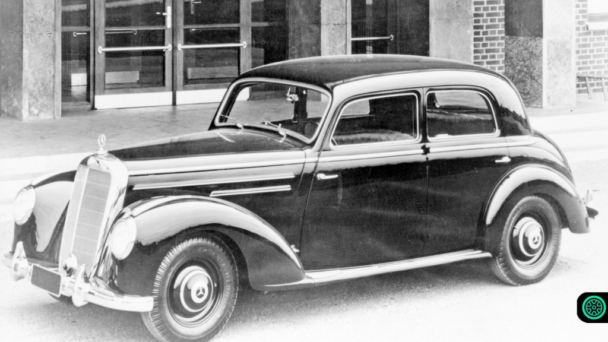
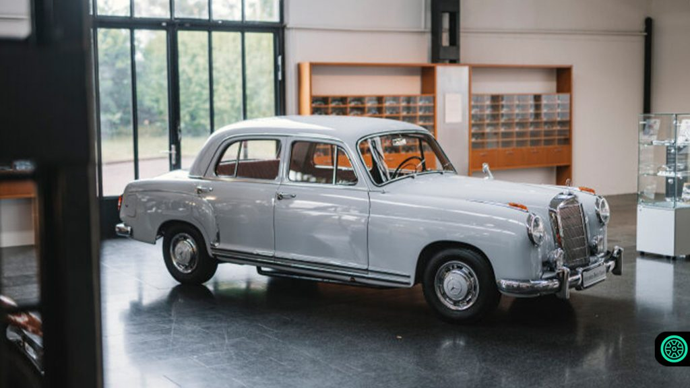
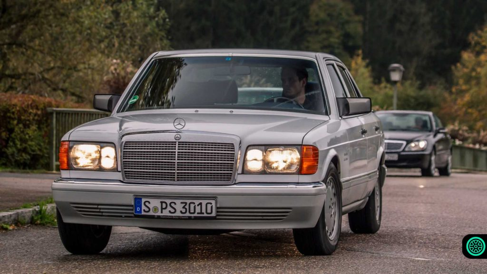
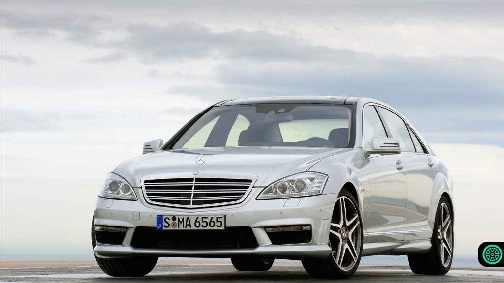
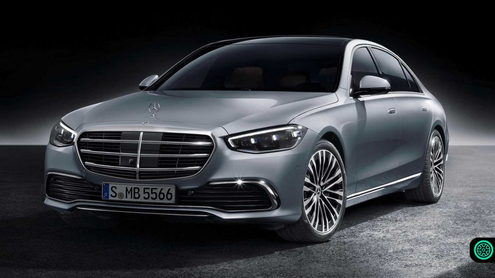

<!DOCTYPE html>
<html lang="en">
<head>
    <meta charset="UTF-8">
    <meta http-equiv="X-UA-Compatible" content="IE=edge">
    <meta name="viewport" content="width=device-width, initial-scale=1.0">
    <title></title>
     <!--bootstrapı dahil ediyorum-->
     <!doctype html>
<html lang="en">
  <head>
  
    <meta charset="utf-8">
    <meta name="viewport" content="width=device-width, initial-scale=1">

   
    <link href="https://cdn.jsdelivr.net/npm/bootstrap@5.0.2/dist/css/bootstrap.min.css" rel="stylesheet" integrity="sha384-EVSTQN3/azprG1Anm3QDgpJLIm9Nao0Yz1ztcQTwFspd3yD65VohhpuuCOmLASjC" crossorigin="anonymous">

    <title>ANA SAYFA</title>
  </head>


  <body>
    <script src="https://cdn.jsdelivr.net/npm/bootstrap@5.0.2/dist/js/bootstrap.bundle.min.js" integrity="sha384-MrcW6ZMFYlzcLA8Nl+NtUVF0sA7MsXsP1UyJoMp4YLEuNSfAP+JcXn/tWtIaxVXM" crossorigin="anonymous"></script>

  </body>
</html>
<!--css i dahi ettiğim kısım-->
    
    <link  rel="stylesheet" type="text/css" href="css/style.css">
</head>
<body id="body">
     <!--menü kısmı bootstrap ile-->
     <nav class="navbar navbar-expand-lg navbar-dark bg-dark">
        <div class="container-fluid">
          <a class="navbar-brand" href="#">ANA SAYFA</a>
          <button class="navbar-toggler" type="button" data-bs-toggle="collapse" data-bs-target="#navbarSupportedContent" aria-controls="navbarSupportedContent" aria-expanded="false" aria-label="Toggle navigation">
            <span class="navbar-toggler-icon"></span>
          </button>
          <div class="collapse navbar-collapse" id="navbarSupportedContent">
            <ul class="navbar-nav me-auto mb-2 mb-lg-0 mx-auto ">
                <li class="nav-item">
                  <a class="nav-link" aria-current="page" href="#">Hakkında</a>
                </li>
                <li class="nav-item">
                  <a class="nav-link " href="#">ARABA</a>
                </li>
                <li class="nav-item">
                  <a class="nav-link active" href="#" tabindex="-1" aria-disabled="true">İletişim</a>
                </li>
              </ul>
            <form class="d-flex">
              <input class="form-control me-2" type="search" placeholder="Search" aria-label="Search">
              <button class=" btn btn-outline-dark" type="submit">Arama</button>
            </form>
          </div>
        </div>
      </nav>


      <!--header kısmı bootstrap ile-->
      
      <header id="header">
        <div class="header">
            <div class="container">
                <div class="header-navbar">
                    <div class="header-logo">
                        <h2>ARABALARI KEŞFET</h2>
                    </div>
                    <div class="header-menu">
                        <ul>
                            <li><a href="#">Ana Sayfa</a></li>
                            <li><a href="#">Hakkında</a></li>
                            <li><a href="#">Keşfet</a></li>
                            <li><a href="#">Çıkış</a></li>
                        </ul>
                    </div>
                </div>
                <div class="header-text">
                    
                    <h3>Arabaların Keşif Dünyası</h3>
                    <a href="#" class="btn-araba">Keşfe Başla</a>
                </div>
            </div>
        </div>
    </header>


<script src="../sitemm/script/script.js" type="text/javascript"></script>

    <section id="about">
        <div class="about">
            <div class="container">
                <div class="about-title">
                    <h2>1951 MERCEDES</h2>
                </div>
                <div class="about-content">
                   <div class="about-img">
                       
                   </div>
                   <div class="about-text">
                       
                       <div id="cars">
                       </div>
                   </div>
                   <p > <b class="resim1"> W187 (1951-1954) </b>  <br>
                    İlk S-serisi, çıktığı yıllara göre üstten eksantrikli ve 6 silindirli bir motora sahipti. Ayrıca model klasik kapı kilidine göre çok daha güçlü olan konik pimli emniyet kapı kilidine öncülük etti. Bu ekstra güç ile birlikte kaza anında kapıların patlaması gibi durumların önüne geçebildi. <br></p>
                </div>


                <section id="about">
                  <div class="about">
                      <div class="container">
                          <div class="about-title">
                              <h2>1954 MERCEDES</h2>
                          </div>
                          <div class="about-content">
                             <div class="about-img">
                                 
                             </div>
                             <div class="about-text">
                                 
                                 <div id="cars">
                                 </div>
                             </div>
                             
                             <p > <b class="resim1"> W105 / W180 / W128 (1954-1959) </b>  <br>
                              W105 / W180 / W128’in teknolojik anlamda gösterdiği ilerlemelerden “Turbocooling” adı verilen ısı dağıtımına yardımcı olabilen fren kampanalarına vardı. Ayrıca kendi kendini destekleyen bir gövde kabuğu tasarımına da sahipti. <br></p>
                          </div>

                          <section id="about">
                            <div class="about">
                                <div class="container">
                                    <div class="about-title">
                                        <h2>1979 MERCEDES</h2>
                                    </div>
                                    <div class="about-content">
                                       <div class="about-img">
                                           
                                       </div>
                                       <div class="about-text">
                                           
                                           <div id="cars">
                                           </div>
                                       </div>
                                       
                                       <p > <b class="resim1"> W126 (1979-1991) </b>  <br>
                                        Birçok W111-W112 gibi, W126 içinde güvenlik konusunda gelişmeler gerçekleşti. 1981 yılından itibaren opsiyonel emniyet kemeri ve sürücü hava yastığı, 1988’den itibaren opsiyonel ön sürücü hava yastığı ve 1985 sonrası çıkan V8 araçlar için ASR hızlanma patinaj kontrolüne sahipti. Ve 1985 sonrasında opsiyonel donanım listesine ayarlanabilir direksiyon kolonu da eklendi. <br></p>
                                    </div>

                                    <section id="about">
                                      <span class="about">
                                          <span class="container">
                                              <span class="about-title">
                                                  <h2>2005 MERCEDES</h2>
                                              </span>
                                              <span class="about-content">
                                                 <span class="about-img">
                                                     
                                                 </span>
                                                 <span class="about-text">
                                                    
                                                     <span id="cars">
                                                     </span>
                                                    </span>
                                                 
                                                 <p > <b class="resim1"> W220 (1998-2005) </b>  <br>
                                                  Tartışmasız modern çağın ilk S-serisi. Otomatik silindir kapatma, 2004 senesinden itibaren elektronik kontrollü otomatik şanzıman, aktif mesafe yardımı, anahtarsız erişim ve sürüş yetkilendirme sistemi gibi birçok gelişmekte olan otomobil teknolojilerine sahipti. Ayrıca W220, S55 ve S65 ile AMG versiyonlarına  sahip ve ilk kez isteğe bağlı bir şekilde alınabilen 4 çeker sistemine sahip S-serisi oldu. <br></p>
                                                 </span>
                                                </span>
                                                </span>

                                              <section id="about">
                                                <span class="about">
                                                    <span class="container">
                                                        <span class="about-title">
                                                            <h2>2020 MERCEDES</h2>
                                                        </span>
                                                        <span class="about-content">
                                                           <span class="about-img">
                                                               
                                                           </span>
                                                           <span class="about-text">
                                                               
                                                               <span id="cars">
                                                               </span>
                                                              </span>
                                                          
                                                           <p > <b class="resim1"> W222 (2013-2020)</b>  <br>
                                                            Bu kasada Mercedes yeniliklerden çok mühendislik olarak modeli çok sayıda adım attı. Ağırlığı ve boyutuna göre yüzde 50 daha yüksek burulma sertlik derecesine sahipti. Ayrıca alüminyum alaşımlı gövdeye sahipti. Yenilik olarak ise  Akıllı Sürüş olarak geçen bir dizi sürüş yardımcısı vardı. Bunlardan en önemlilerinden biri ise çukurları karşılaşmadan önce belirleyip şasiyi ve süspansiyonu buna göre ayarlayabilen bir sisteme sahipti. <br></p>
                                                           </span>
                                                       </span>
            
                                                      </span>
    </section>

  
     <div id="video"><h3>1886-2018 Mercedes Değişimi İçin Videoya Tıklayınız.</h3></div>
    <iframe width="500" height="200" src="https://www.youtube.com/embed/XQGW2S3HMAk" title="YouTube video player" frameborder="0" 
allow="accelerometer; autoplay; clipboard-write; encrypted-media; gyroscope; picture-in-picture" allowfullscreen></iframe>

<iframe src="https://www.google.com/maps/d/embed?mid=1dMdv0w4KhAbYNcjhB2gILRcBjBs&ehbc=2E312F" width="500" height="200"></iframe>

    <div id="son"><em><h3>Mercedese Sahip Olmak Bir Ayrıcalıktır..</h3></em></div> 

    <a href="#" id="links">Contact</a>
    <a href="#" id="link1s">Social Media</a>
    <a href="#" id="link2s">More..</a>
         <!--footer-->
 <footer class="bg-dark text-white p-3 text-center mt-2">
  #ASIM DESİGN#
</footer>

</body>
</html>